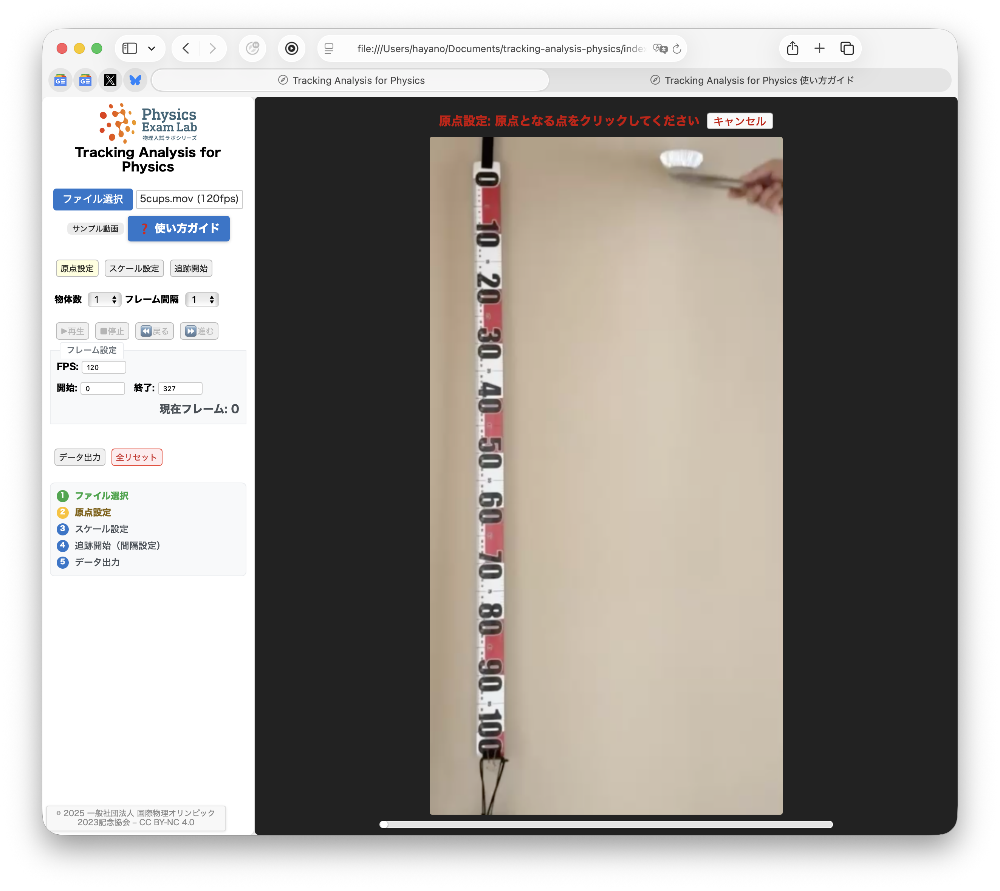

このガイドでは、2023年共通テストで出題されたアルミカップを落とす実験を例として、解析の流れを説明します。
下図は実験のイメージです。
実際の例では、カップが5枚重ねてあります（n=5）。
サンプル動画で練習：「サンプル動画」ボタンをクリック
ご自身の動画：「ファイル選択」ボタンで動画（mp4, mov等）を選択
動画読み込み後、「フレーム設定」セクションで「FPS」（1秒あたりのフレーム数）を入力します。
サンプル動画の場合は自動的に120fpsが設定されます。ご自身の動画の場合は、撮影時のフレームレートを入力してください。
動画下のスライダーで解析範囲を確認し、必要に応じて「開始」「終了」フレーム数を調整してください。
「原点設定」ボタンをクリック → 原点となる点をクリック
「スケール設定」ボタンをクリック → 始点をクリック → 終点をクリック → 実際の長さを入力（例：1.0m）
「フレーム間隔」と「物体数」を設定（例：間隔20、物体数1）
「追跡開始」ボタンをクリック → 各フレームで物体の位置をクリック
追跡完了後、「データ出力」ボタンをクリック → Excel用またはCSV形式を選択 → 表示されたデータをコピーしてExcelなどに貼り付け
書き出したデータはExcelなどで簡単にグラフ化できます。
右図は、5つ重ねたアルミカップの落下実験データをExcelでグラフ化し、データの後半（速度が安定した区間）を直線フィットした例です。
直線にきれいに乗っており、カップが一定速度で落下していることが分かります。